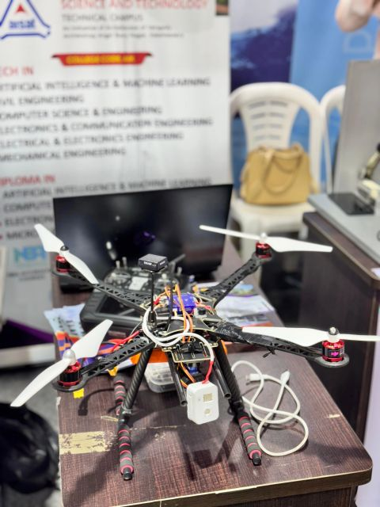
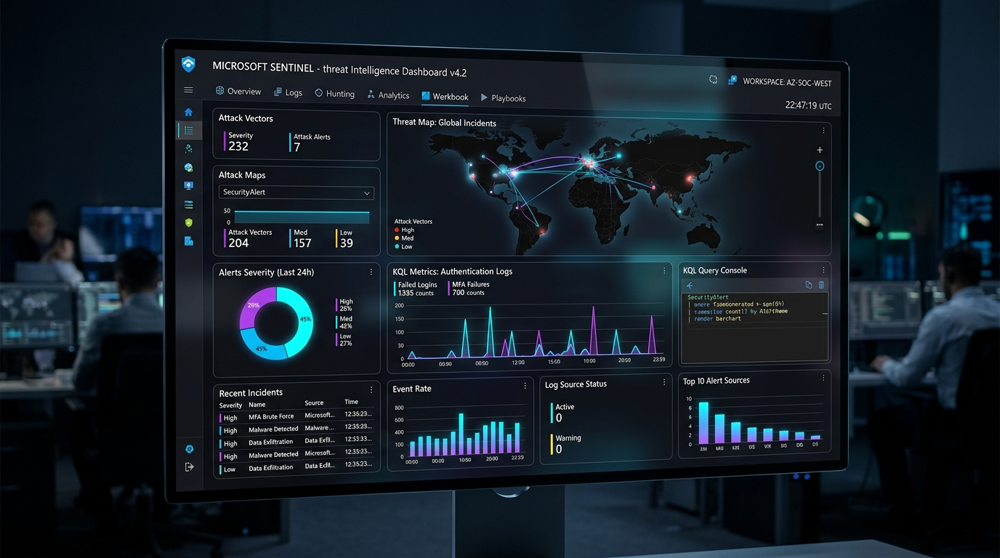
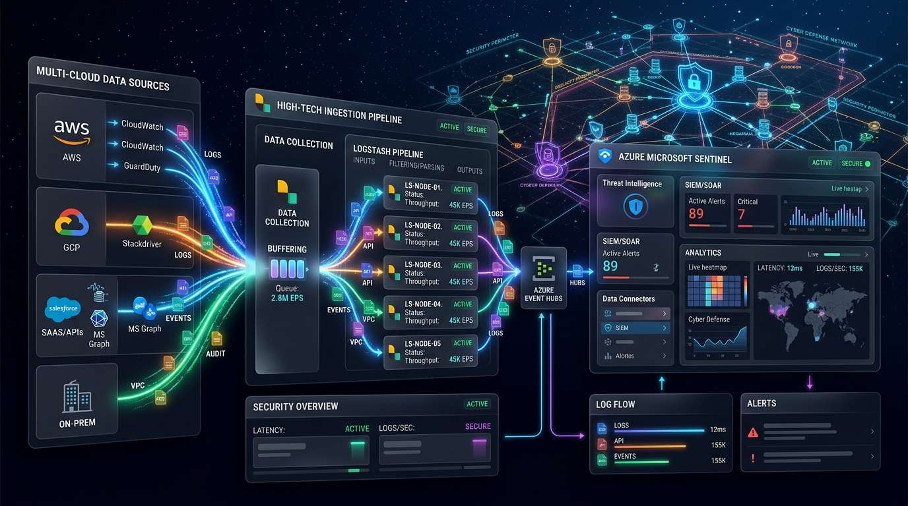
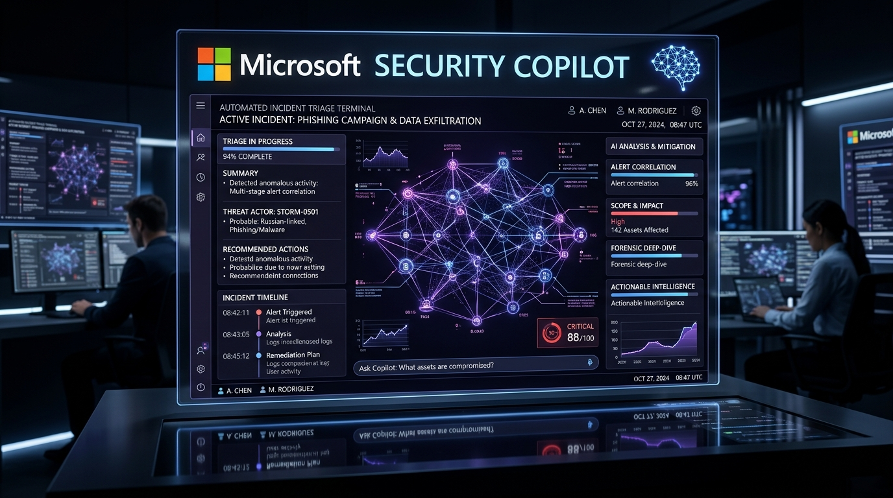
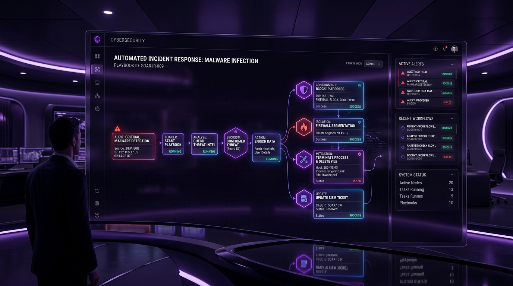
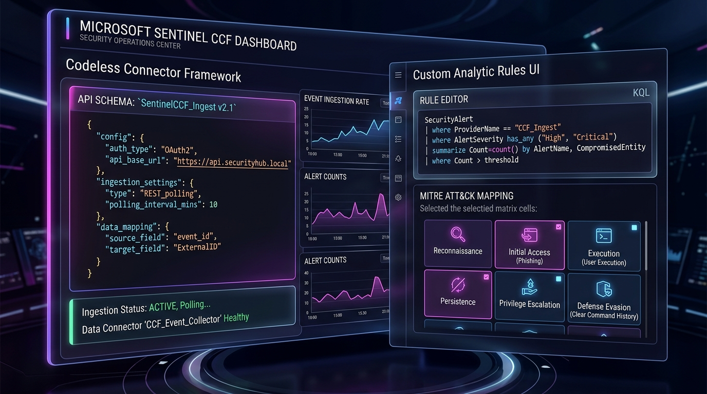

Associate Security Engineer at Paramount Computer Systems architecting end-to-end Microsoft Sentinel telemetry pipelines, custom interactive Workbooks, API-based log ingestion, Logstash grok filters, Logic Apps SOAR automation, and Microsoft Security Copilot. Proven delivery for government entities, airlines, telecom, and healthcare enterprises across India and the UAE.
Building resilient enterprise security solutions, cloud defense, and AI transformation
Real-world systems across AI Robotics, Sentinel Workbooks, Ingestion Pipelines, and Security Copilot

IoT-based rescue drone officially selected by KTU and exhibited at Kerala’s 4th Anniversary ENTE KERALAM government expo. Features YOLOv8-trained human detection, real-time face recognition via ESP32-CAM, and load-lifting capability for emergency survival supplies in remote disaster zones.

Engineered visual SOC dashboards mapping global multi-cloud attack vectors, authentication anomalies, and MITRE ATT&CK coverage in real time. Features parameterized KQL metrics, alert severity heatmaps, and executive reporting views deployed for enterprise clients.

Architected high-volume ingestion streams using Azure Monitor Logs Ingestion API (DCE) and Linux Logstash forwarders. Developed custom grok filtering pipelines and ingestion-time KQL transformations to sanitize PII and route multi-terabyte feeds into Azure Log Analytics.

Implemented AI-assisted incident investigation connecting Microsoft Security Copilot, Copilot Studio, and Anthropic Model Context Protocol (MCP). Automated promptbook workflows for rapid forensic drilldowns, entity extraction, and multi-stage alert correlation.

Engineered automated incident response playbooks triggered on high-severity Sentinel alerts. Performs real-time malicious IP containment on enterprise firewalls, revokes compromised user sessions in Microsoft Entra ID, queries threat intelligence feeds, and notifies on-call SOC teams via automated adaptive cards.

Engineered turnkey REST API data ingestion using Microsoft Sentinel Codeless Connector Framework (CCF / CCP) with JSON configuration schemas and automated API polling. Authored high-fidelity custom Analytic Rules in KQL mapped to MITRE ATT&CK tactics, utilizing automated entity mapping, alert aggregation, and threshold alerting to detect advanced persistence and lateral movement.
Turning passion into performance and effort into excellence
"Grateful and proud to be honored with the PT Thomas MLA Excellence Award for academic achievements in Computer Science & Engineering and Electronics & Communication Engineering. Received this prestigious recognition from MLA Uma Thomas 🌟 Another milestone unlocked — and the journey’s just getting started."
"Golden Eye – The Rescue Drone was officially selected by APJ Abdul Kalam Technological University (KTU) to be showcased at the prestigious ENTE KERALAM government function celebrating Kerala’s 4th Anniversary. Exhibited technological innovation that meets social impact."
Inducted into the elite Principal’s Club at the Albertian Institute of Science and Technology for continuous academic excellence, maintaining a consistent CGPA above 8.0 (8.65) throughout 4 years of engineering studies.
Official credentials verified across Microsoft, Anthropic, IISc Bangalore, and NPTEL
Associate Security Engineer at Paramount Computer Systems, certified Frontier Transformation Engineer by Microsoft AI Frontiers, and Microsoft Certified: Security Operations Analyst Associate (SC-200). Specialized in Microsoft Sentinel SIEM deployments, custom Sentinel Workbooks, API-based log ingestion, Linux Logstash grok filtering, Azure Logic Apps SOAR automation, and Microsoft Security Copilot. Proven delivery across government, aviation, telecom, and healthcare sectors in India and the GCC. Winner of the PT Thomas MLA Excellence Award and builder of the state-recognized Golden Eye Rescue Drone.